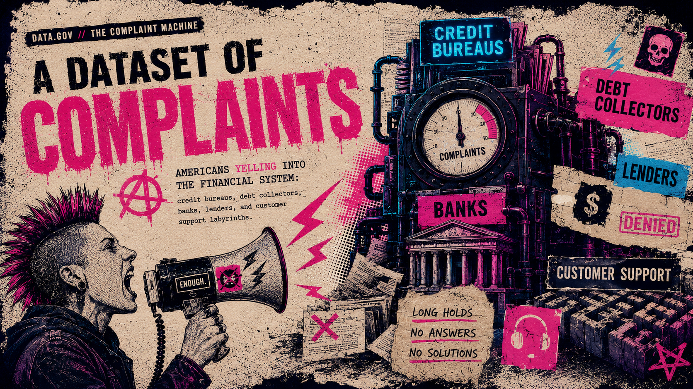

Summer Into AI - Week 3

3D COMPLAINT ATLAS
Click a state. Make it testify.
PRODUCT PAIN WALL
What people complain about
MOST NAMED COMPANIES
Wanted posters, statistically speaking
COMPLAINT STORIES, SORT OF
The public narratives are often redacted, but the issues are loud.